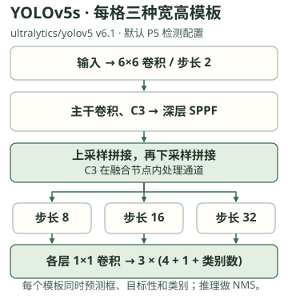
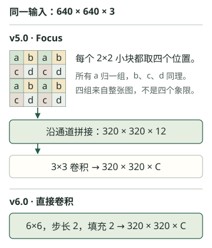
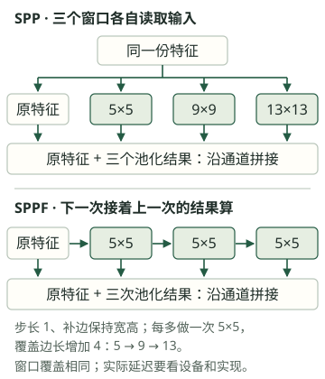

YOLOv5 · 主线① 特征结构，连接② 检测头与⑥ 部署
经典 YOLOv5：检测原理与版本辨识
YOLOv5 先在不同分辨率的特征上找目标，再从预设的宽高模板出发，把框调到目标边界。先用 v6.1 的标准小模型看清一次检测，再回到铁路项目：哪些结构线索可以辨认当年的版本，哪些还不能？
带点线的词可悬停看释义，点按可固定。旧仓库的 v6.1 是发布标签，不代表 YOLOv6，也不代表另一个无锚版本 YOLOv5u。
检测原理 · 原仓库 v6.1 / YOLOv5s / 常规水平框
同一格为什么会报三个框？
先保留不同大小目标的线索。主干的 C3 块加工不同深度的特征，深层的 SPPF 通过池化汇集不同范围的信息。随后先上采样融合，再向下传回：细层结合语义辨认小目标，粗层也能利用从细层传来的定位信息。最后选三层做预测，不是对每一层都加检测头。

再让同一个网格位置尝试几种形状。以 640×640 输入为例，步长 8、16、32 对应 80×80、40×40、20×20。每一层各有三种先验框；每个候选都输出中心与宽高的调整量、目标性和各类别分数。三层合计 3×(80²＋40²＋20²)＝25,200 个候选。模板只是起点，最终框可以比模板大，也可以比它小。
哪几个候选来学这一个标注？训练时先用目标与模板的宽高比例筛选；标注中心靠近网格边界时，符合条件的邻格也可以加入。选中的候选通过 CIoU 学边界，另外学习目标性和类别。模板匹配的好处是规则明确；如果训练集改成了许多细长目标，应该检查模板覆盖，而不能只沿用旧数据的配置。
为什么推理还要去重？多个候选可以在训练中负责同一目标，推理时也可能一起报出它。常规路径按目标性与类别分数的乘积筛选，再用 NMS 抑制同类重复框。降低阈值能留下更多低分候选，不能弥补缩放时丢失的细节。
复核：v6.1 模型配置 · 样本分配与损失 · 筛选与 NMS。结构参照不构成铁路项目当年使用这一小版本的证据。
01 · 铁路货车：区分项目与材料
后期材料记为 YOLOv5，小版本待核。
这套检测面向货车轴端：检测密封罩脱落、轴承甩油，同时定位螺栓。螺栓框用于给后续关键点和转角计算限定区域；转角并非 YOLO 检测头直接输出。
两批记录在螺栓定位这一步不一致。2022、2023 年简历写 YOLOv3；2024 年解释版和后来的审核稿写 YOLOv5。材料的年份是写作时间，不能据此断言现场做过一次从 v3 到 v5 的升级。
相关岗位的任职时间为 2021.08–2022.11。原项目思维导图写了“周期半年”，没有填起止月份。仅凭这两条，还不能断定训练基线落在 2021 年秋还是 2022 年春。总览选 v6.1 做代码对照，也不构成项目证据。
本地依据：每条材料能说明什么？
- 2022、2023 年《算法工程师简历》的铁路项目条目：早期对螺栓检测器的记录。
- 《2024算法工程师简历-含3D解释版3.0》、后续《四川乐收-中文CV审核意见》第 29–31 项：后期描述、任务分工，以及任职窗口。
- 《铁路列车滚动轴承故障检测.xmind》：“周期半年”；项目时间线没有绝对年月。本次未找到能绑定到这次训练的提交号、配置和启动日志。
02 · 按首次取代码的时间缩小范围
如果当时取的是最新正式版，会是哪一个？
每行日期是旧仓库的发布日期。从该日到下一行日期之前，左边是当时最新的正式标签。若沿用公司已有代码、从开发分支取代码或中途升级，这个假设就不成立。
任职初期：若 2021 年 8 月至 10 月 11 日新取最新版，先查 v5.0。默认 P5 模型用 Focus、C3、SPP；这一版还新增了四个预测尺度的 P6 型号。
2021 年秋至次年初：输入层从 Focus 换成 6×6 步长卷积，SPP 换成 SPPF。这是最容易从配置里看见的分界。
2022 年春夏：如果在 2 月 22 日到 8 月 16 日首次拉取最新版，优先查 v6.1。该版集成了 TensorRT、OpenVINO 等导出与推理；自行转换旧模型也能用 TensorRT，因此部署工具本身不能定版。
2022 年下半年：新增分类支持，原有检测仍可单独使用。只记得“做的是框检测”，区分不了 v6.1 与 v6.2。
任职窗口末尾：新增实例分割，仍保留框检测。只有首次取版或换库在 11 月 22 日或之后，才需把该正式版列入当时的候选；不能从“11 月离职”反推用过它。
更早的仓库 v4.0（2021-01-05）已使用 C3 和 SiLU。若拿到的是旧基线，v4.0 及之前的标签也不能单靠任职日期排除。这里的 v4.0、v6.0 均指 YOLOv5 仓库，不是独立模型 YOLOv4、YOLOv6。
03 · 结构图：看输入层，再看主干深处
两张图能认出结构代际，
不一定能认出发布标签。
对照官方默认 yolov5s.yaml。两代都有 C3，也都有基于先验框的三尺度检测头。只盯着输出，很难区分；输入的第一步和深层的池化路径才是有用线索。
在整张网络里，输入层和 SPPF 分别在哪里？


看图后的判断：若原配置是 Focus + C3 + SPP，先比对 v4.0 / v5.0 的默认 P5；若是 6×6 步长 2 卷积 + C3 + SPPF，则与 v6.0 至 v7.0 多个发布标签都相容。公司改过 YAML 时，这些只代表采用了哪套模块。
可逐行对照： v5.0 配置 · v6.0 配置 · v7.0 配置 · Focus / SPP / SPPF 的实现。v7.0 的默认配置里甚至保留了“v6.0 backbone”的注释；它也不是提交号。
04 · 避免把文件名当作发布日期
三个看似相近的文件名，回答不同的问题。
yolov5s.pt：s 表示 Small 规模；多个标签都有同名权重。yolov5s6.pt：s 是规模，6 指 P6 配置，多一个步长 64 的预测层。仓库 v5.0 就已经发布过，末尾的 6 不表示仓库 v6.0。yolov5su.pt：u 是后来的变体，使用不依赖预设宽高、没有独立 objectness 输出的分头设计。不能拿它倒推原版 v5 检测头。官方对 v5u 的说明
05 · 回到项目原件
最值得找的是当年那次训练的开头几行。
先找铁路项目那次训练的启动日志，看有无仓库版本或提交短哈希。若保留的是当时的代码快照，可用 git describe --tags --always 查看它对应的标签或提交；今天重新克隆的仓库不能说明当年的状态。
只有模型 YAML 时，按上面两张图判断结构代际。只有简历或发布日期时，就保留本页的条件判断。当前可复述为：“后期记录中，铁路项目用 YOLOv5 做轴端部件检测和螺栓定位；具体用的是哪个发布版，还要以当年的训练记录为准。”